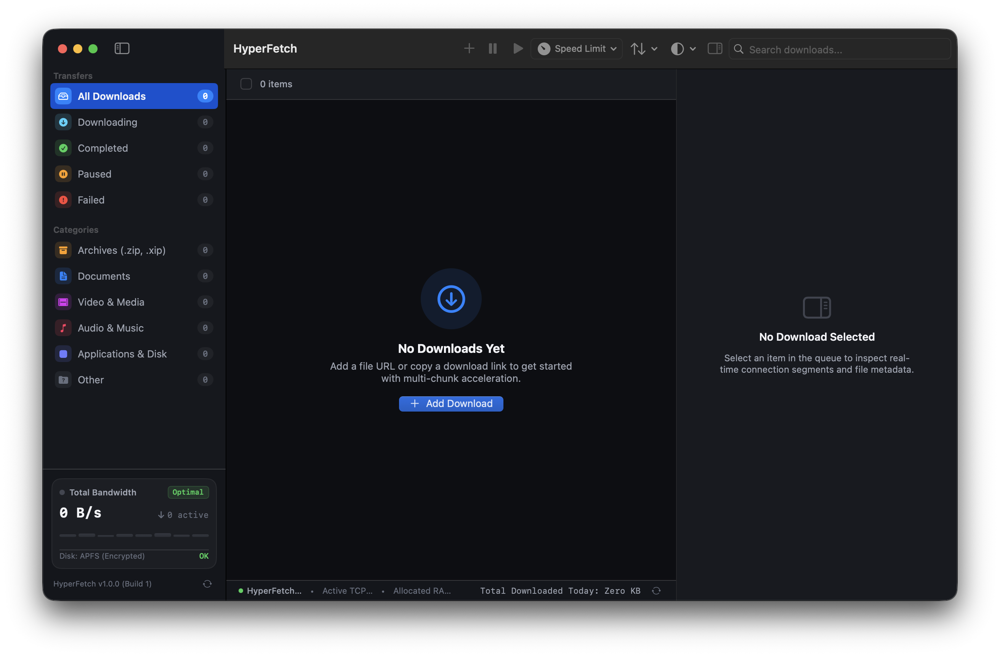

The best lightweight, high-speed native download manager for macOS. Accelerated multi-chunk HTTP Range streaming, direct POSIX sparse I/O, seamless Chrome & Safari auto-capture, smart categorized folders, and zero telemetry.
Interactive Range Stream Simulator
Experience HyperFetch’s real-time 8-chunk parallel streaming engine right inside your browser. Toggle pause/resume to watch the I/O state react instantly.
~/Downloads/HyperFetch/
Sparse allocation: Enabled (ftruncate)
Crafted for Apple Silicon & macOS Sonoma
Designed from the ground up using Pure Swift 6 and SwiftUI. Crisp typography, native system vibrant sidebars, and dark mode perfection.

Everything You Need. Nothing You Don't.
Every byte and syscall in HyperFetch is engineered for raw macOS performance.
Splits large files across up to 16 concurrent HTTP Range streams. Saturates your gigabit fiber connection by bypassing per-connection server-side throttling.
Pre-allocates target files using atomic ftruncate() and streams incoming segments directly to disk via positional pwrite(). Zero disk fragmentation, zero reassembly lag.
Seamless Chrome Extension and native Safari integration capture downloads automatically. Supports custom file-type filters and holding Alt to bypass.
Auto-routes incoming downloads into orderly folders: Applications, Archives, Documents, Video, and Music.
Always stay on the latest version. Built-in GitHub Releases query checks, background downloads, and performs seamless in-place updates without browser redirects.
Compact ~6 MB binary, idling under 40 MB of RAM. No Chromium / Electron bloat, no bundled promo software, no background trackers. Completely open source.
Technical Comparison
See how HyperFetch stands out against traditional heavyweight download managers.
| Metric / Feature |
HyperFetch
v1.0.10
|
Free Download Manager | Folx | Browser Default |
|---|---|---|---|---|
| Binary Size | ~6 MB | ~120 MB | ~45 MB | N/A (Built-in) |
| Language & Architecture | Pure Swift 6 & SwiftUI | Qt / C++ cross-platform | Obj-C / Swift hybrid | C++ Chromium / WebKit |
| Memory Idle Footprint | < 40 MB | ~250 MB | ~150 MB | High (Shared browser) |
| Telemetry & Promos | Zero / 100% Clean | Closed-source promo banners | Paid Pro upsell popups | Browser telemetry |
| Multi-Chunk Range Visualizer | Real-time (Up to 16 Chunks) | Basic progress bar | Limited (Pro only) | Single Stream only |
| POSIX Direct I/O Pre-allocation | Yes (ftruncate + pwrite) |
Temporary part files | Standard file merge | None (Sequential) |
| In-App Auto-Updates | Yes (Instant In-Place) | Yes | Paid upgrades | Browser update |
Browser Companion Guide
HyperFetch includes native companions for Chromium browsers (Chrome, Edge, Brave, Arc) and Safari.
Works with Chrome, Brave, Arc, Edge, and Vivaldi
Open Extensions Manager
Navigate to chrome://extensions in your browser address bar.
Enable Developer Mode
Toggle the Developer mode switch in the upper-right corner.
Load Unpacked Extension
Click Load unpacked and select the extensions/chrome folder from the repository.
Instant Interception
Any triggered download is automatically forwarded to HyperFetch’s local listener on port 31415. Hold Alt while clicking to bypass.
macOS System Services & URL Scheme Integration
Native URL Protocol Support
HyperFetch registers the hyperfetch:// custom URL scheme automatically upon first launch.
Context Menu & Quick Action
Right-click any downloadable link in Safari → select Services → Download with HyperFetch.
Direct Clipboard Auto-Detection
Copying any download URL while HyperFetch is running in the menu bar immediately summons the quick-download sheet.
No subscription. No tracking. Pure native Swift performance that respects your Mac.